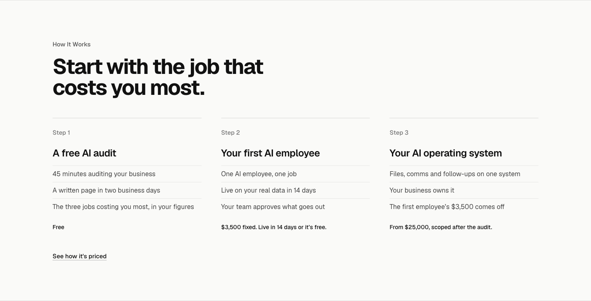
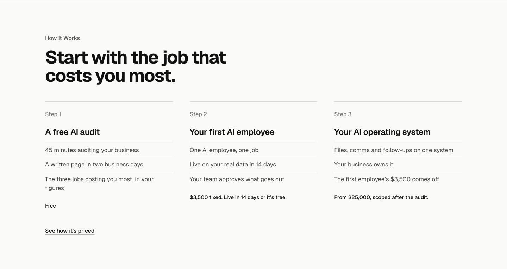
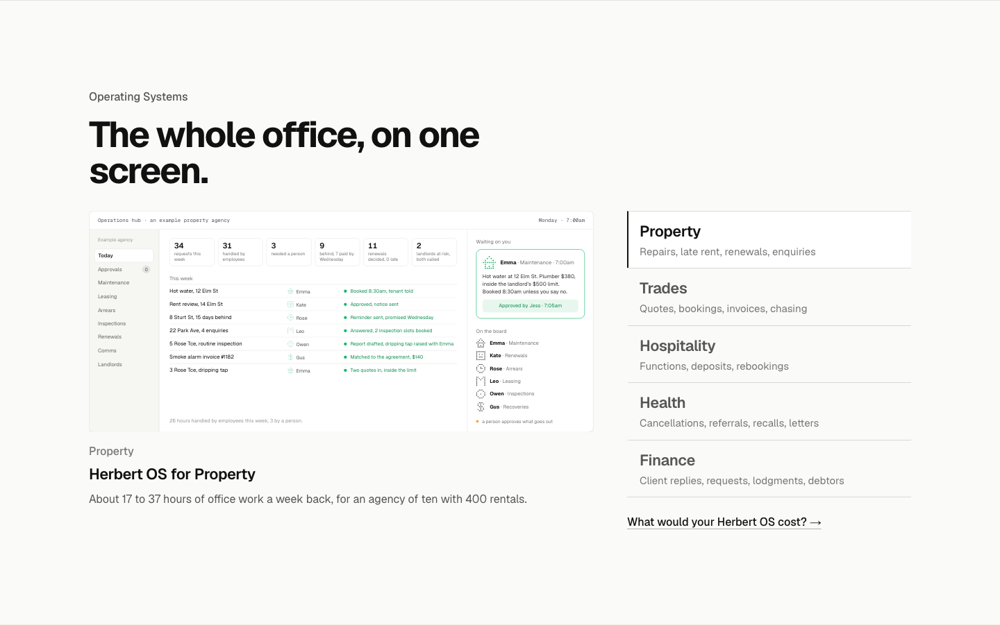
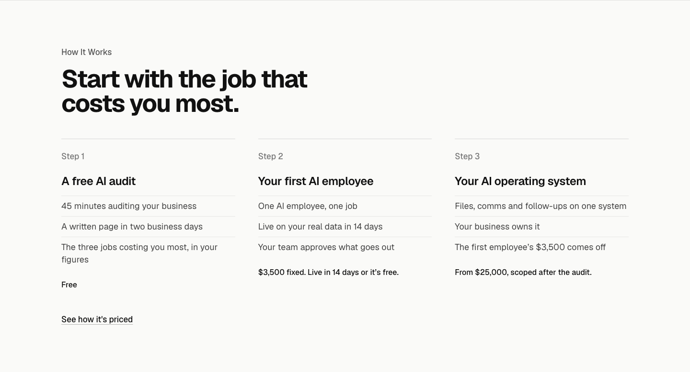
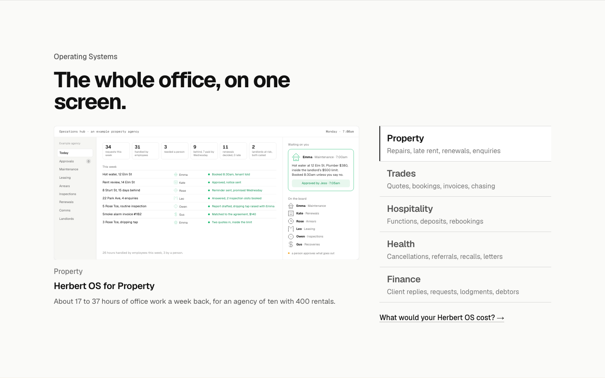

TodayBody copy at 15px, list lines at 14, the step facts at 16.


Critique fix 4. How It Works on the left, Operating Systems on the right, at 1440x900. The product screens and the hero board keep their own sizes.




